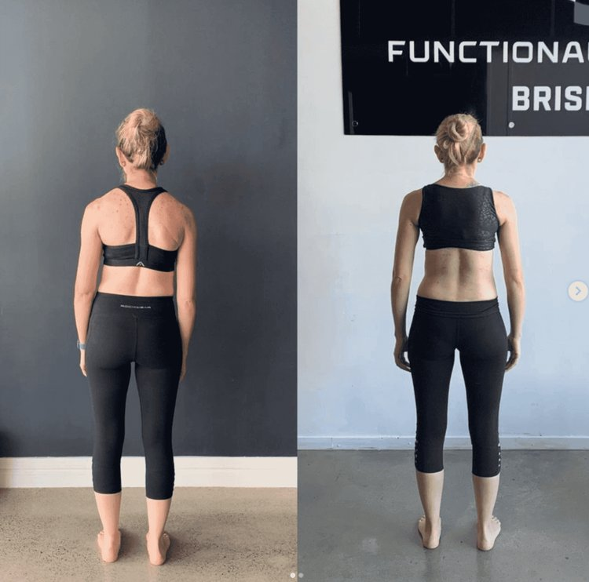

Your Comprehensive Guide
If you’ve been diagnosed with a bulging disc, you’ve likely searched for ways to fix it naturally — without surgery, injections, or long-term medication.
The problem is that most advice focuses on pain relief, not why the disc is under stress in the first place.
At Functional Patterns Brisbane, we look at bulging discs as a mechanical and movement issue, not just a spinal injury. This guide explains what a bulging disc actually is, whether it can heal naturally, and what needs to change in the body for that healing to occur.
Understanding Bulging Discs
What is a bulging disc?
A bulging disc occurs when an intervertebral disc extends beyond its normal boundary, usually due to repetitive compression or uneven loading.
Unlike a ruptured or herniated disc, the outer disc wall remains intact.
Bulging discs are most common in the lumbar spine, where daily posture and walking mechanics place repeated stress on the discs.
Bulging disc vs herniated disc
-
Bulging disc: disc material pushes outward but remains contained
-
Herniated / ruptured disc: disc material breaks through the outer wall
This distinction matters because bulging discs are often reversible when loading patterns change.


Symptoms of a bulging disc
-
Localised or diffuse back pain
-
Pain with prolonged sitting or standing
-
Reduced spinal movement
-
Leg symptoms if nerve tissue becomes sensitised
Importantly, many people have bulging discs on imaging without pain — meaning symptoms are not just about the disc itself.
Can a Bulging Disc Heal Naturally?
Can a bulging disc heal itself?
Yes — a bulging disc can heal naturally in many cases.
But healing does not happen just because time passes.
A bulging disc improves when:
-
Chronic compression is reduced
-
Spinal load is redistributed
-
Movement becomes more symmetrical
If the same forces continue to act on the spine, the disc remains irritated — even with rest.
How long does a bulging disc take to heal?
There is no fixed timeline. Healing depends on:
-
How long the disc has been overloaded
-
Daily posture and movement habits
-
Whether gait mechanics are corrected
-
Training history and current load tolerance

What Makes a Bulging Disc Worse?
Many well-intended approaches actually increase disc pressure, including:
-
Excessive sitting with poor posture
-
Over-bracing the core
-
Repetitive flexion-based exercises
-
Strength training that reinforces asymmetry
-
Ignoring walking mechanics
This is why many people ask:
“Why hasn’t my bulging disc healed even after physio or core exercises?”
A Holistic Approach to Bulging Disc Healing
Why isolated treatments fail
Stretching, massage, or general core strengthening may reduce pain temporarily, but they don’t change how force moves through the spine.
A holistic approach looks at:
-
Whole-body posture
-
How the pelvis, ribcage, and spine stack
-
How load transfers during walking
This is where Functional Patterns training differs from traditional physical therapy for bulging discs.

The Role of Functional Patterns Training

Functional Patterns focuses on correcting the movement patterns that overload discs, particularly during gait.
Key areas addressed include:
-
Reducing chronic spinal compression
-
Improving left-right symmetry
-
Restoring rotational mechanics
-
Teaching the body to absorb force through the hips and legs, not the spine
This creates an environment where the disc is no longer under constant stress.
Posture Correction Exercises for Bulging Discs
Why posture matters for disc healing
Posture determines where pressure accumulates in the spine.
Poor posture keeps discs compressed even when you’re not “doing anything.”
Posture correction exercises aim to:
-
Stack the ribcage over the pelvis
-
Reduce excessive lumbar arching or flattening
-
Improve spinal length under load
These are not generic posture drills — they are chosen based on how disc pressure shows up in movement.
Integrating posture correction into daily life
A bulging disc won’t heal if posture only improves for 30 minutes a day.
Healing depends on:
-
Standing posture
-
Walking posture
-
Fatigue patterns
Training must carry into real-world movement.
Strengthening Core Muscles (Without Increasing Disc Pressure)

Why traditional core exercises can backfire
Many people with bulging discs are told to “strengthen the core,” but excessive planks, crunches, and bracing often increase spinal compression.
A safer approach
Effective core function:
-
Transfers force, rather than locking the spine
-
Works dynamically with gait
-
Reduces reliance on constant tension
This allows the disc to unload rather than remain compressed.
Mindful Movement Practices for Disc Recovery
What “mindful movement” actually means
Mindful movement isn’t passive relaxation. It’s awareness of:
-
Weight shift
-
Rotation timing
-
Ground contact
This helps reduce protective tension that keeps discs under constant load.
Examples
-
Controlled walking drills
-
Rotational movement patterns
-
Breathing integrated with movement (not bracing)
Relaxation Techniques for Bulging Disc Pain
Why relaxation matters
Persistent pain often involves a sensitised nervous system.
Chronic tension increases compression and limits movement options.
Helpful techniques include:
-
Breathing that restores ribcage motion
-
Gentle movement that lowers threat perception
-
Gradual re-exposure to load in controlled patterns
Relaxation supports structural change — it doesn’t replace it.
Summary: How to Heal a Bulging Disc Naturally
Healing a bulging disc naturally is less about “fixing the disc” and more about changing the forces acting on it.
Key principles:
-
Reduce chronic compression
-
Improve posture and symmetry
-
Restore efficient gait mechanics
-
Avoid exercises that reinforce spinal stress
When these variables change, many bulging discs improve — often without invasive treatment.
Looking for guidance in Brisbane?
If you’re dealing with a bulging disc and want to understand whether your posture and movement patterns are contributing, a structured assessment can help clarify your next step.
Functional Patterns Brisbane works with clients across Brisbane seeking long-term, movement-based solutions, not symptom-only care.